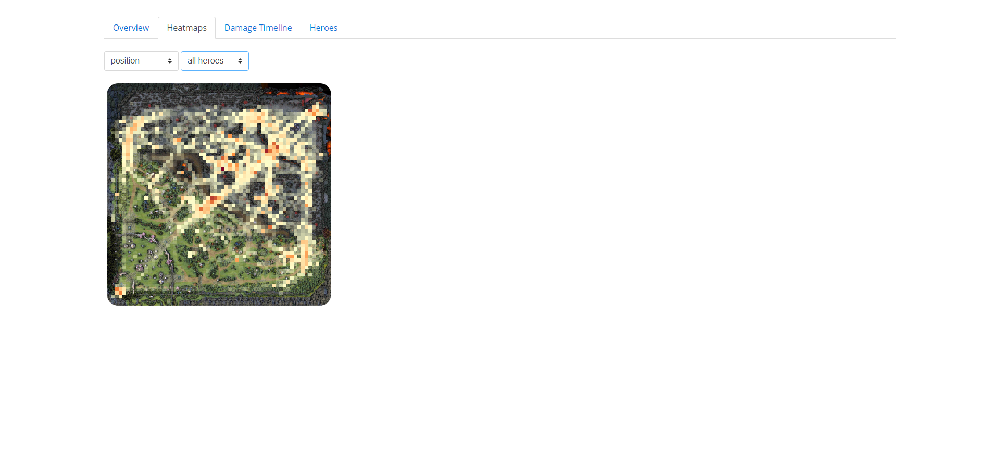

Decisive Analytics Intership
During the summer of 2017, I worked as a UI/UX intern at Decisive Analytics Corporation in Arlington, Virginia. As an intern, I worked on a handful of frontend services used for data analytics and machine learning related applications.
Below are details and screenshots from two projects I worked on. I had the opportunity to build both of these UI's' from the ground up and both were passed on to full-time employees further development.
SOL Version Control Frontend
This project served at a frontend UI for a version control system (akin to GIT) designed specifically for large numbers of structured data objects (think database entries). The app functions much like a basic bitbucket or gitlab: users can view repositories and compare commits much like one would do with code. Built using Angular and Semantic UI and interfaced with an associated REST API.

ATLAS UI
ATLAS was a project for the U.S. army. The army was building a video game to simulate and test new equipment and techniques and Decisive Analytics was contracted to provide data analytics. This UI served as a prototype data visualization platform for the project. Since the game itself was still under development, data for the game DOTA was used as for proof of concept.
A major component of the project was an algorithm that analyzed player behaviors and discrete actions. The video below demonstrates visualization of the output of algorithm using player movement tracks from hundreds of games as input. The animation on the right is visualizing the player movement associated with different behaviors and actions.
The remaining screenshots demonstrate several concepts for viewing and analyzing various statistics and data.

